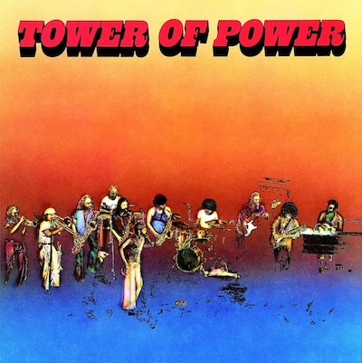

Tower Of Power - Tower Of Power

Music On Vinyl
Description
180 gram audiophile vinyl
Third and most successful studio album by Tower Of Power
Features the hit singles "What Is Hip?", "So Very Hard To Go" & "This Time It's Real" a.o.
Limited edition of 2000 individually numbered copies on translucent yellow coloured vinyl
Details
- Release Date: 01-12-2023
- Original Release Year: 1973
- Sleeve: 3mm
- Grams: 180g
- Genre: Jazz
- Number of discs: 1 LP
- Speed (RPM): 33 RPM
- Record Size: 12"
- Barcode (EAN): 8719262032033
- Catalogue number: MOVLP1243
Tracklist
Side A
- What Is Hip?
- Clever Girl
- This Time It's Real
- Will I Ever Find A Love?
- Get Yo' Feet Back On The Ground
Side B
- So Very Hard To Go
- Soul Vaccination
- Both Sorry Over Nothin'
- Clean Slate
- Just Another Day
Discogs
| Label | Warner Records, Music On Vinyl |
| Format | Vinyl, LP, Album, Limited Edition, Numbered, Reissue, 180 Gram, Yellow [Translucent] |
| Released | 01/12/2023 |
| Genre | Jazz, Funk, Soul |
| Style | Jazz-Funk, Soul, Funk |
Credits
- Arranged By, Conductor [Strings], Trumpet, Flugelhorn, Vocals – Greg Adams
- Baritone Saxophone [Baritone Sax], Oboe, Vocals – Stephen Kupka
- Bass – Francis Rocco Prestia
- Congas, Bongos – Brent Byars
- Design, Illustration, Photography By, Harmonica – Bruce Steinberg
- Drums – David Garibaldi
- Guitar, Vocals – Bruce Conte
- Lead Vocals – Lenny Williams
- Mixed By [Mixing Assistant] – Alan Chinowsky
- Organ, Vocals – Chester Thompson (2)
- Producer – Tower Of Power
- Producer [Production Supervision], Tenor Saxophone [2nd Tenor Sax], Vocals – Emilio - Castillo
- Recorded By, Mixed By – Jim Gaines
- Tenor Saxophone [1st Tenor Sax], Flute, Clarinet, Vocals – Lenny Pickett
- Trumpet, Trombone, Flugelhorn, Baritone Horn, Vocals – Mic Gillette